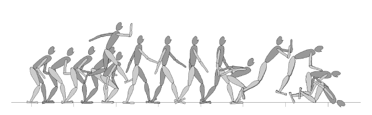

Simulating Biped Behaviors from Human Motion Data

Overview
Physically based simulation of human motions is an important issue in the context of computer animation, robotics and biomechanics. We present a new technique for allowing our physically-simulated planar biped characters to imitate human behaviors. Our contribution is twofold. We developed an optimization method that transforms any (either motion-captured or kinematically synthesized) biped motion into a physically-feasible, balance-maintaining simulated motion. Our optimization method allows us to collect a rich set of training data that contains stylistic, personality-rich human behaviors. Our controller learning algorithm facilitates the creation and composition of robust dynamic controllers that are learned from training data. We demonstrate a planar articulated character that is dynamically simulated in real time, equipped with an integrated repertoire of motor skills, and controlled interactively to perform desired motions.
Publication
Kwang Won Sok, Manmyung Kim, Jehee Lee, Simulating Biped Behaviors from Human Motion Data, ACM Transactions on Graphics (SIGGRAPH 2007), Vol. 26, No. 3, Article 107, July 2007.
PDF (0.8M) / QuickTime MPEG4 (123M)
Presentation
Data
Personnel
[Last modified : July 25, 2007]